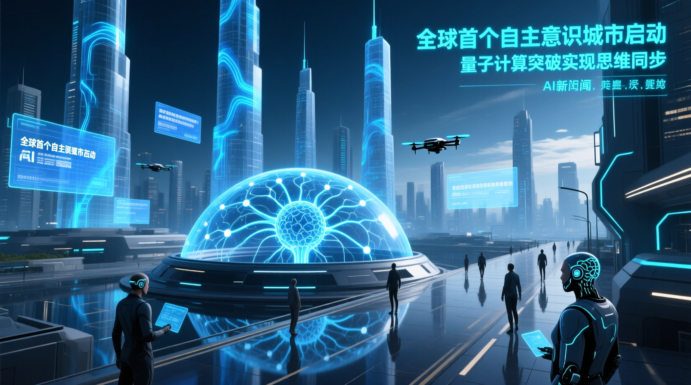

## 新聞導語隨著人工智能技術的不斷進步，如何有效地與AI進行溝通成為了當前時代的一個重要課題。近期，業界觀察指出，提示詞工程（Prompt Engineering）在過去一兩年內被廣泛討論，儘管AI的理解能力越來越強，但了解如何編寫專業的提示詞仍然是每個人都應該具備的基本技能。專家分析認為，掌握提示詞撰寫技巧能夠顯著提高使用AI的效率，並確保AI產出的內容更符合預期。本次報告將深入探討Anth

研究指出，Anthropic官方提供了一套完整的提示詞架構，該架構由六個部分組成：Starter、Contexts、Task Instruction、Examples、Output Format和Repeat Critical Instruction。以一個產品經理希望AI幫忙分析用戶反饋的情況為例，首先需要在Starter區塊中設定AI的角色和任務，例如“你是一個有十年經驗的產品策略專家”。接著，在Contexts區塊中提供足夠的背景信息，如公司業務範圍、目標客戶群及當前面臨的問題。Task Instruction則應詳細描述具體的任務指令，包括執行步驟和核心原則。Examples區塊可以用來提供參考範例，但需注意避免過度依賴範例從而限制創意。Output Format用於指定最終產出的格式，而Repeat Critical Instruction則是在結尾處重申最重要的要求，以確保AI理解無誤。
此外，業界觀察還總結了五個實戰技巧，這些技巧能夠進一步優化提示詞的效果。首先，明確定義輸出格式，這樣可以避免AI在修改過程中破壞已有內容。其次，要求AI在遇到不確定之處時主動提問，而不是自行假設。第三，鼓勵AI展開思考過程，逐步推理而非直接給出結論。第四，明確告知AI什麼是好的產出和什麼是差的產出，這樣可以引導AI朝正確的方向努力。最後，利用meta prompting讓AI幫忙撰寫提示詞，這種方式通常比自己從零開始編寫更快更有效。